| 1938 |
Učestvujući u izgradnji ceste Sarajevo-Ilidža
sa dvoja vučna kola, Stjepan Martinović kao
privatni poduzetnik, prvi puta pruža uslugu
transporta i na taj način odpočinje aktivnu
ulogu obitelji Martinović u transportnoj djelatnosti
koja će se uspješno nastaviti u decenijama koje sljede.
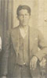 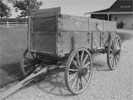 |
| |
| 1943-1945 |
Tijekom rata vučna kola bivaju oduzeta za potrebe
vojske te u daljnem toku i uništena a nakon završetka
drugog svjetskog rata skoro cjelokupna imovina firme
biva nacionalizovana
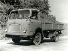 |
| |
| 1966 |
Nakon okončanja školovanja za zvanje mehaničara,
Vinko Martinović sa 21-om godinom u drugom koljenu
započinje novo poglavlje transportne tradicije kupovinom
prvog kamiona tip TAM 4500B (Avala) sa kojim se u narede
tri godine uglavnom pružaju usluge transporta građevinskog
materijala na širem područiju Sarajeva.
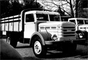 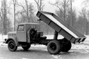 |
| |
| 1970 |
Prelaskom na kamion Csepel 420 sa nagibnim tovarnim prostorom
povećava se efikasnost i nosivost. Akcent angažovanja još je uvijek
na udovoljavanju transportnih potreba pri izgradnji i obnovi grada.
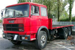 |
| |
| 1975 |
Kupovinom kamiona Fiat 697 sa prikolicom težište poslovanja
prenosi se sa lokalnog na nacionalni transport. U tom periodu
pružaju se logističke usluge za potrebe industrije te se uz
građevinske materijale transportuje i roba široke potrošnje.
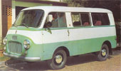 |
| |
| 1976 |
U sastav voznog parka ulazi prvo kombi vozilo
tip Zastava 1300TF koje se uglavnom koristi kao
servisno vozilo.
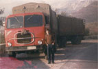 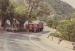 |
| |
| 1980 |
Povećavaju se transportni kapaciteti nabavkom kamiona Fiat 682 sa
kojim se uglavnom u kombinaciji sa prikolicom vrši transport građevinskih
materijala prema i iz luka Ploče i Metković.
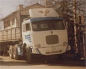 |
| |
| 1982 |
Uz Fiat 693 vozni park se proširuje i za devetometarsku
damper-poluprikolicu sa kojom se prevozi rasuti teret za potrebe
kamenoloma.
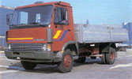 |
| |
| 1984 |
Kupovinom lakog kamiona Zastava 645AD započinje pružanje usluga
logistike i distribucije na širem područiju tadašnje države, uglavnom
za potrebe prehrambene industrije.
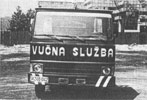 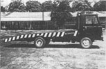 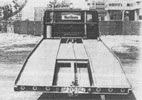 |
| |
| 1987 |
Nabavkom još jednog lakog kamiona Zastava 640 i vlastoručnom
preradom tog vozila sa sandučara na šlep-službu obogaćuje se
paleta ponude i sa tim vozilom se po prvi puta obavlja i
internacionalni transport.
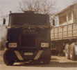 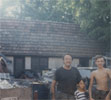 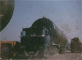 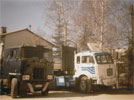 |
| |
| 1988 |
Vozni park se obogaćuje za kamion MACK F-700 sa kojim se
uglavnom obavljaju izvanredni transporti za potrebe željezare
Zenica, željezare Ilijaš kao i za auto i vojnu industriju Famos.
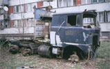 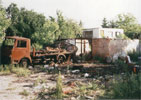 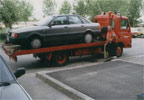 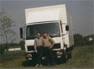 |
| |
| 1992-1995 |
U ratnom periodu cijelokupan vozni park firme biva uništen ili
oduzet za potrebe vojske a zbog ratnih aktivnosti u neposrednoj
blizini, porodica Martinović napušta Sarajevo te se dijelom u
Hrvatskoj a dijelom u Njemačkoj nastavlja baviti transportniom
djelatnošću tj. ostaje u uskoj povezanosti sa istom.
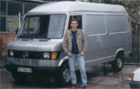 |
| |
| 1996 |
Nabavkom kombi vozila Mercedes-Benz 307D nastavlja se
transportna tradicija u trećoj generaciji te ujedno i započinje i
tržišna aktivnost pod imenom Sprinter-Sarajevo pri čemu se od
samoga početka akcent stavlja na internacionalni transport kombi
vozilima.
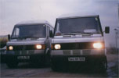  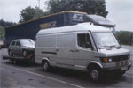 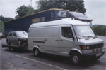 |
| |
| 1998 |
Kupovinom vozila Mercedes-Benz 310D vrši se modernizacija u
svrhu podizanja kvaliteta usluge a istovremeno se područije djelovanja
proširuje na Francusku i Španiju.
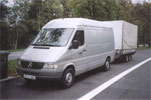 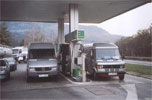 |
| |
| 2002 |
Mercedes-Benz Sprinter 312D postaje druga vozna jedinica firme što omogućava znatno povećanje kapaciteta uzme li se u obzir mogućnost
tog vozila za kombinovanje sa prikolicom koja se nabavlja već sljedeće godine
pa se na taj način maksimalni utovarni kapacitet podiže na 3 tone.
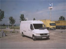 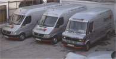 |
| |
| 2004 |
Još jedan Mercedes-Benz Sprinter 312D uvrštava se u red vozila, ovaj put u
produženoj verziji pogodnoj za volumensku robu kakva se uglavnom transportuje u
pružanju logističke potpore auto industriji što postaje jedan od osnovih zadataka.
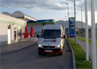 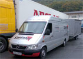 |
| |
| 2006 |
Zbog povećanja potražnje tržišta za efikasnim transportnim
sistemima povećava se kapacitet voznog parka na četvrto vozilo, ovaj put
to je Mercedes-Benz Sprinter 316CDI.
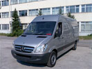 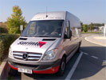 |
| |
| 2007 |
| Prvi put od osnutka firme postajemo ponosan vlasnik novog teretnog vozila
marke Mercedes-Benz 318CDI sa kojim osim što povećavamo broj aktivnih
voznih jedinica na pet, sljedimo i sve veću svijest za očuvanjem okoliša
investirajući u najrazvijeniju ekološki prihvatljivu tehnologiju. |